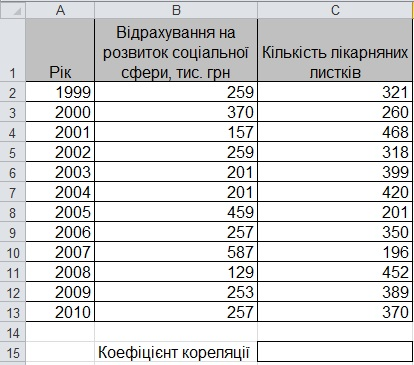
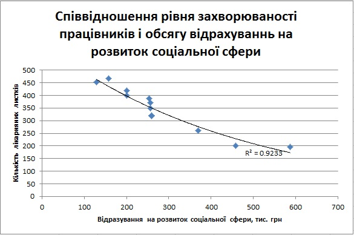

Практична робота 7.2
Скориставшись відомостями про щомісячні відрахування на розвиток соціальної сфери підприємства та про рівень захворюваності його працівників протягом 12 років (рис. 7.16), з'ясуйте, чи існує між цими показниками залежність, визначте її тип та спрогнозуйте, як зміниться рівень захворюваності працівників, якщо відрахування на розвиток соціальної сфери збільшити до 700 тис. грн. Визначте також, як зміниться рівень захворюваності у разі зменшення відрахувань до 100 тис. грн.
Хід виконання
- Створіть нову електронну книгу та введіть у неї дані, зазначені на рис. 7.16. Збережіть документ у файлі Практ_7_2.xlsx.
- У клітинці С15 за формулою =CORREL(A2:A13;C2:C13) обчисліть коефіцієнт кореляції. Він має дорівнювати -0,94. Проаналізуйте отриманий результат.
- Для наочного відображення зв'язку між відрахуваннями на розвиток соціальної сфери підприємства та рівнем захворюваності працівників побудуйте точкову діаграму (рис. 7.17). Логічно припустити, що саме відрахування впливають на рівень захворюваності, а не навпаки. Тому обсяг відрахувань на соціальну сферу буде факторною ознакою, значення якої розміщуватимуться на осі X, а рівень захворюваності – результативною, її значення вказуватимуться на осі У.

Рис. 7.16. Таблиця з вихідними даними - Побудуйте пряму лінію тренду для створеної діаграми. Для цього виділіть діаграму та виконайте команду Макет
 Лінія тренду. На вкладці Параметри в області Прогноз в обидва поля, в перед на і назад на, введіть значення 100. Задайте відображення рівняння регресії та коефіцієнта детермінації.
Лінія тренду. На вкладці Параметри в області Прогноз в обидва поля, в перед на і назад на, введіть значення 100. Задайте відображення рівняння регресії та коефіцієнта детермінації. - Коефіцієнт детермінації дорівнює 0,88, що свідчить про непогану відповідність лінії регресії вибірковим даним. Проте резерв для покращення значення R2 теж є. Множина точок на діаграмі розсіювання дещо вигнута дугою вниз, і це свідчить про те, що, можливо, парабола відповідатиме їй краще, ніж пряма. Тож додайте до діаграми ще одну лінію тренду, на цей раз поліноміальну степеня 2, і задайте для неї відображення коефіцієнта детермінації. Він дорівнює 0,94 – отже, поліноміальна лінія тренду відповідає вибірковим даним краще.
- Виділіть пряму лінію тренду та видаліть її, натиснувши клавішу Del. Клацніть поліноміальну лінію тренду правою кнопкою миші, виберіть з її контекстного меню команду Формат лінії тренду і в однойменному вікні на вкладці Параметри задайте відображення прогнозу вперед на 120 одиниць і назад на 100 одиниць. Лінія тренду має набути такого вигляду, як на рис. 7.17.

Рис. 7.17. Діаграма залежності між обсягом відрахувань на соціальну сферу та рівнем захворюваності - За лінією тренду складіть прогноз щодо рівня захворюваності у разі, якщо відрахування на соціальну сферу становитимуть 100 тис. і 700 тис. грн.